01 / EL MARCOTU ESTILO.
TU ESTILO.
NUESTRA PRECISIÓN.
Conservá tus anteojos favoritos.
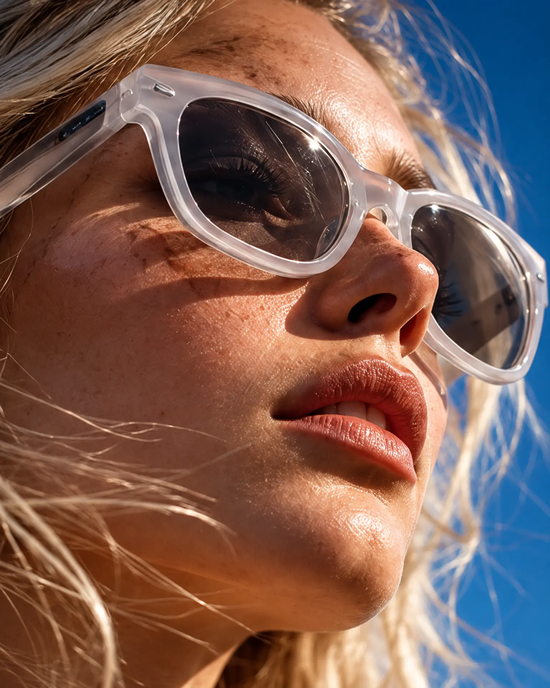
Tu marco favorito. Cristales nuevos.
Más claridad. Más color. Más vida.
Conservá los anteojos que te gustan. Nosotros nos encargamos de renovar sus cristales según tu receta. Descubrí cómo una pequeña transformación puede sentirse enorme.
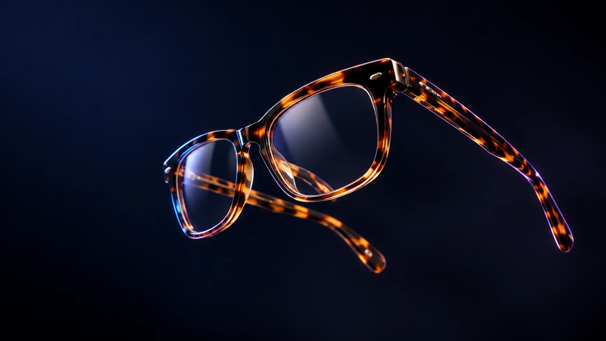
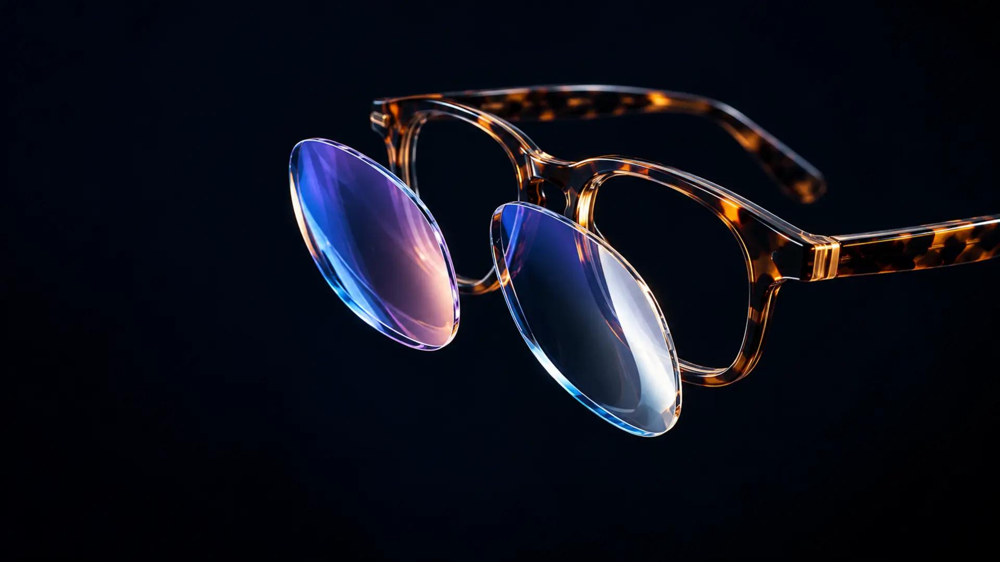
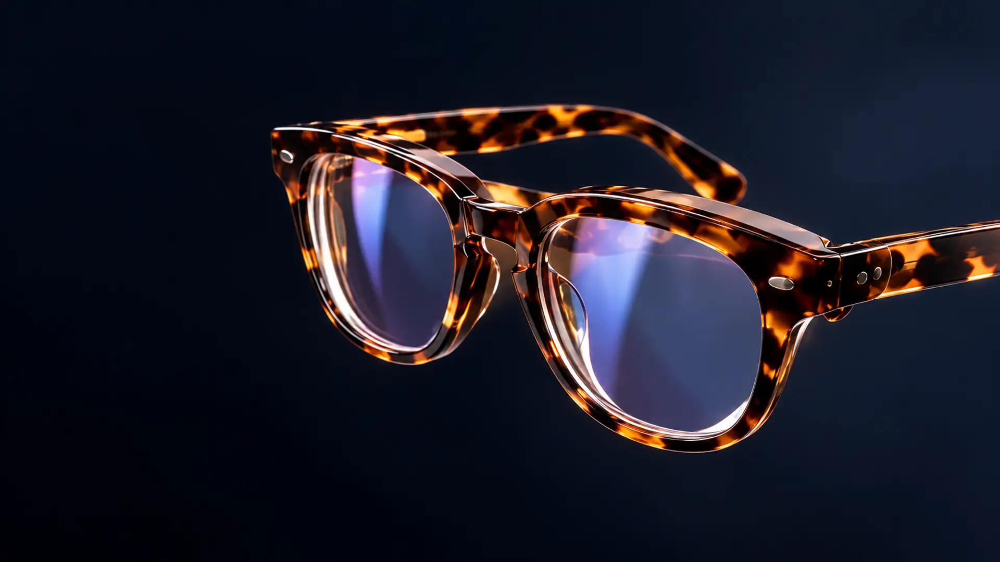
Conservá el marco que te gusta. Cambiamos solamente los cristales, previa evaluación de compatibilidad.
Conservá tus anteojos favoritos.
Los preparamos según tu receta.
Tu estilo, con una mirada renovada.
Personas, formas, colores, materiales. Tu marco es parte de vos. Conservá el marco que te representa. Renovamos sus cristales para que sigas disfrutando tu estilo.
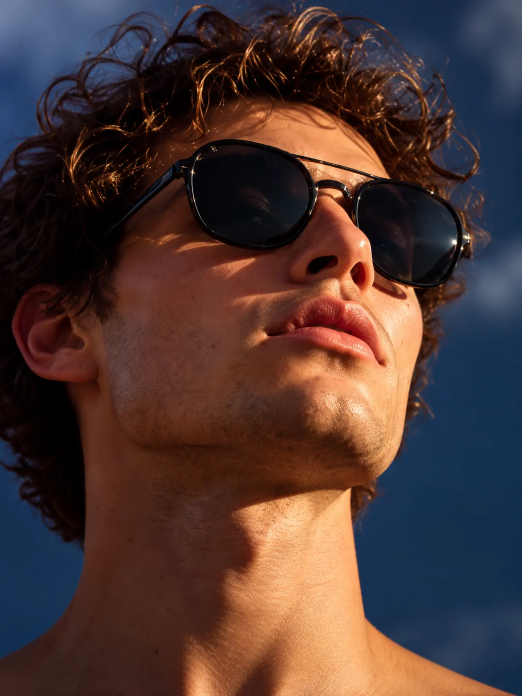
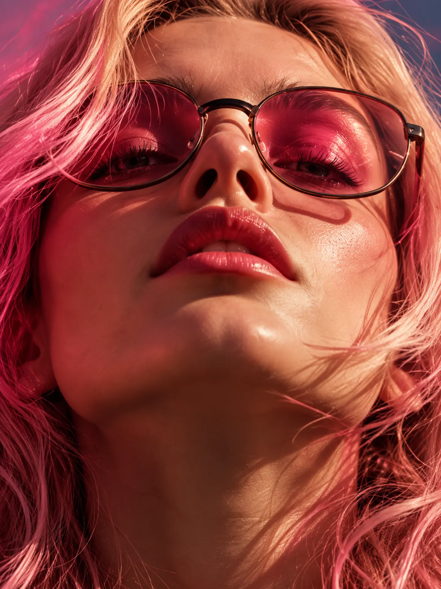
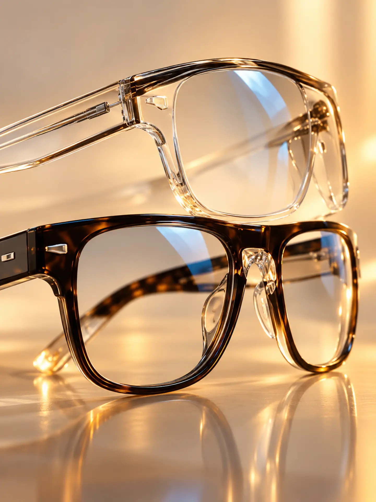
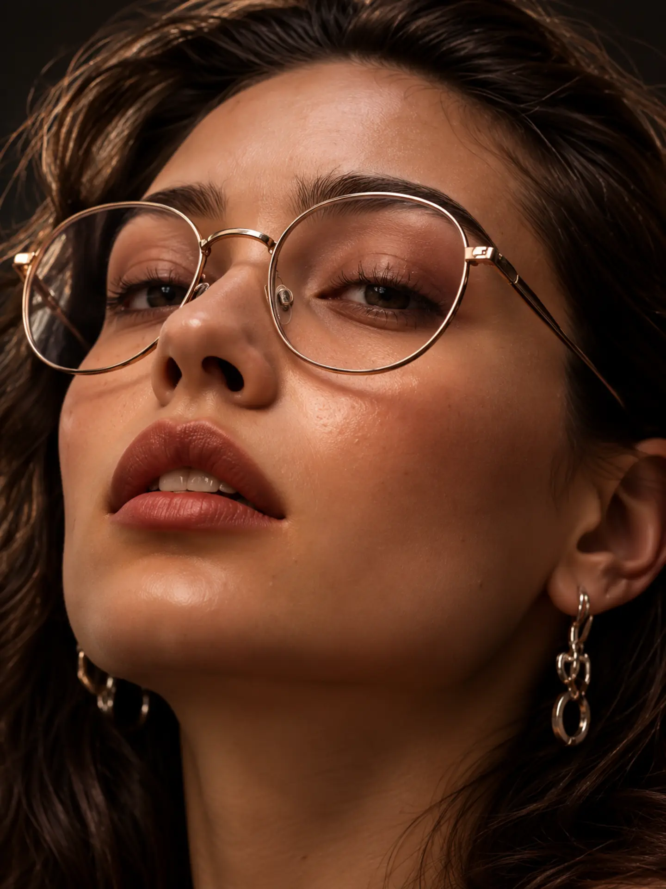
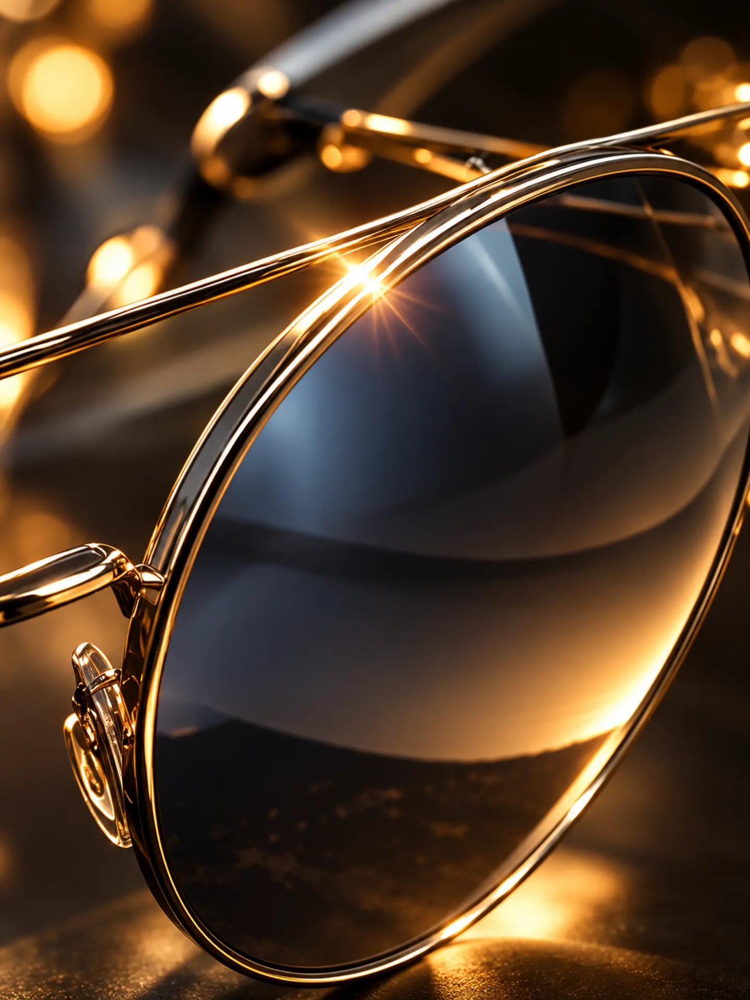
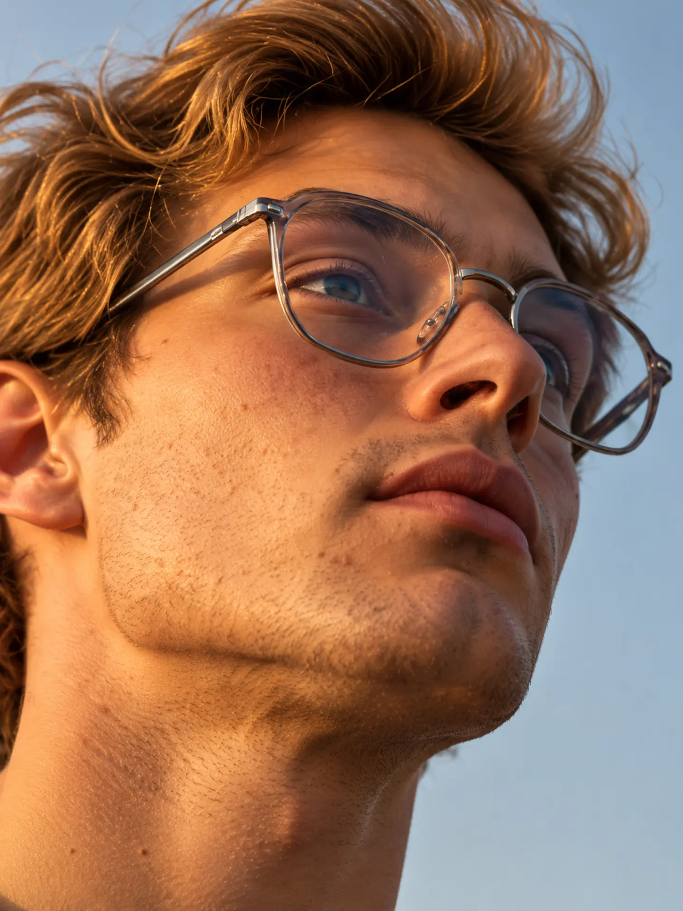
Imágenes conceptuales de inspiración. Consultá compatibilidad de tu marco y receta.
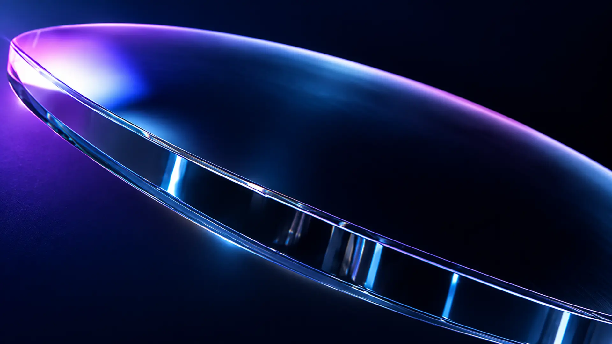
Opciones de cristales según tu receta y necesidades: monofocales, multifocales y tratamientos disponibles según material y presupuesto.
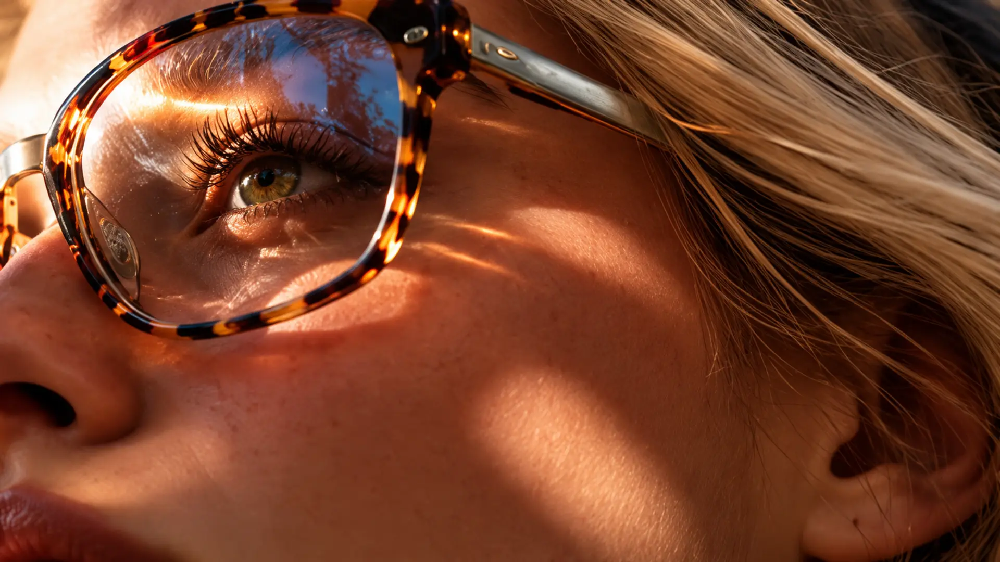
Es volver a disfrutar los detalles. Tu trabajo, tus momentos, tus pasiones. Todo se ve mejor cuando te sentís cómodo.
* Stock: plazo habitual de 3 días. Laboratorio: mínimo 15 días. Plazo confirmado al presupuestar. Retiro y entrega según zona, con costo aparte.
Te asesoramos según tu receta y el estado de tu marco.
Primero evaluamos su estado y compatibilidad. Te confirmamos si es apto antes de realizar el trabajo.
El valor depende de la graduación, el tipo de cristal y los tratamientos elegidos. Escribinos y te preparamos una cotización.
Sí, coordinamos retiro y entrega en Gran Mendoza según la zona y disponibilidad. Los costos de traslado se informan previamente.
Stock: plazo habitual de 3 días. Trabajos de laboratorio: mínimo 15 días. Confirmamos el plazo al presupuestar.
Contanos qué cristales necesitás.
Te orientamos y preparamos una cotización según tu receta.